gps triangulate calculate height python script
Files
py313.bat
gps-triangulate-pics.py
gps-calculate-height.py
gps-img-open-maps.sh
GPS data in photos captured Pixel 7 Pro
Default camera app captures GPS coords like:
GPS Version ID : 2.2.0.0
GPS Latitude Ref : South
GPS Latitude : 32.226572°
GPS Longitude Ref : East
GPS Longitude : 115.803453°
GPS Altitude Ref : Below Sea Level
GPS Altitude : 12.8 m
GPS Time Stamp : 01:46:37
GPS Img Direction Ref : Magnetic North
GPS Img Direction : 140
GPS Date Stamp : 2026:06:05However direction is flakey. Brief testing shows portrait mode captures direction almost 180° opposite. As if designed for selfies. Landscape appears to work as intended.
OpenCamera app however is solid and also captures yaw pitch and roll:
User Comment : Yaw:14.072492, Pitch:-22.737116219637013, Roll:-25.72520112174726
GPS Latitude : 32.225938°
GPS Altitude : 0 m
GPS Latitude Ref : South
GPS Altitude Ref : Below Sea Level
GPS Processing Method : GPS
GPS Longitude Ref : East
GPS Time Stamp : 01:56:51
GPS Longitude : 115.806643°
GPS Date Stamp : 2026:06:05
GPS Img Direction : 277.05
GPS Img Direction Ref : Magnetic NorthUsing data from at least two pics taken apart and directed towards object in distance we can triangulate and calculate approx coords of object, and distance to object.
From brief tests it’s pretty accurate. At least, I can easily find object on Google Maps.
Python script gps-triangulate-pics.py
prints out info incl target’s calculated distance and coords, and
ascii ray graph to stderr (i.e. to
screen) and geocoords to stdout (i.e. return value),
e.g. -32.225535,115.802791.
With -a flag, the script outputs format usable by next
script gps-calculate-height.py,
e.g. --olat -32.225534732096165 --olon 115.80279056457381.
Example 1
This morning on a walk with Cassie I took two photos of a cell tower in the distance, curious to know its location,each photo taken several hundred meters apart. I was not yet aware of saving pitch and so this example won’t show height calculation.
{kind=link}
{kind=link}
Each photos location:
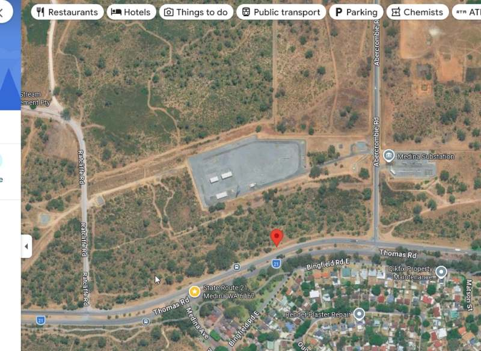
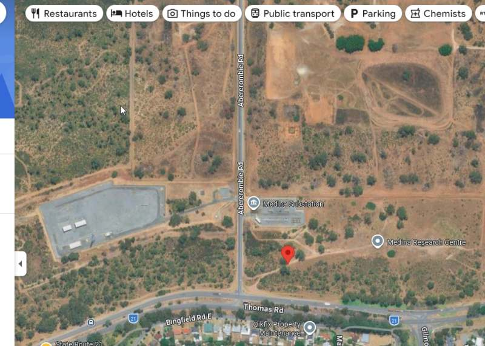
Default output e.g. -32.225535,115.802791. Check out the
ASCII rayline graph.
To open result directly in Google Maps:
GPS=$(py313.bat c:/cygwin64/home/tom/bin/utilities/gis/gps-triangulate-pics.py -z 500 -p 1) && "$(cygpath -u "c:\Program Files\Mozilla Firefox\firefox.exe")" "https://www.google.com/maps/place/$GPS"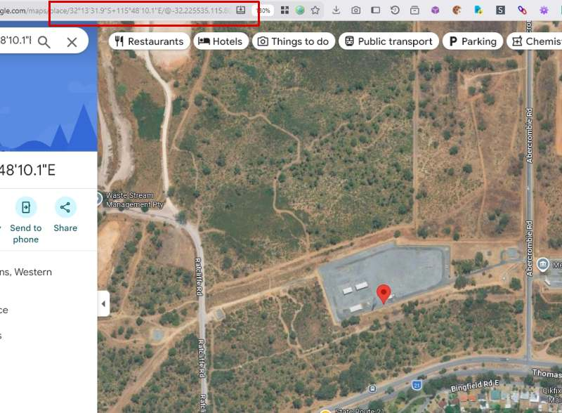
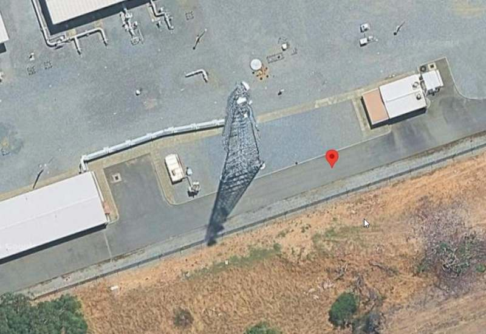
Example 2
Later on in the day coming back from shopping at Kwinana Hub I took photos of another cell tower mounted on a nearby building and much closer than the tower in Example 1.
{kind=link}
{kind=link}
{kind=link}
Notice how the top of the tower is captured in the center of each pic. By then I’d figured out how to capture pitch.
Each photo’s position in Google Maps:
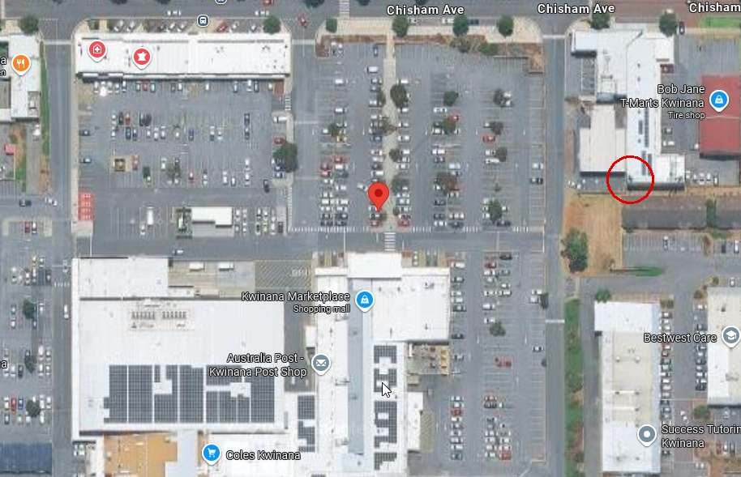
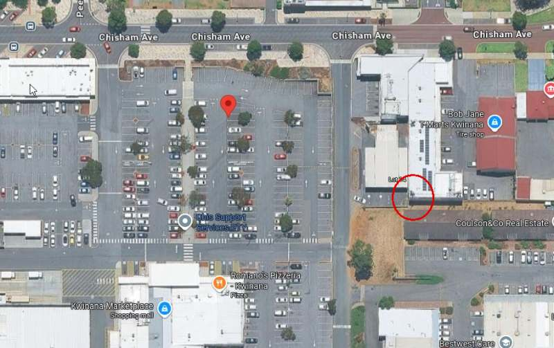
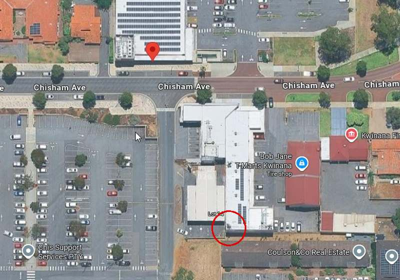
First, let’s triangulate:
And pipe to Google Maps:
GPS=$(py313.bat c:/cygwin64/home/tom/bin/utilities/gis/gps-triangulate-pics.py -z 200 -p 2) && "$(cygpath -u "c:\Program Files\Mozilla Firefox\firefox.exe")" "https://www.google.com/maps/place/$GPS"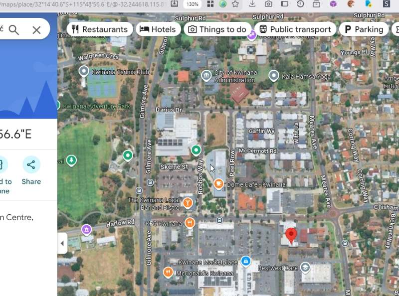
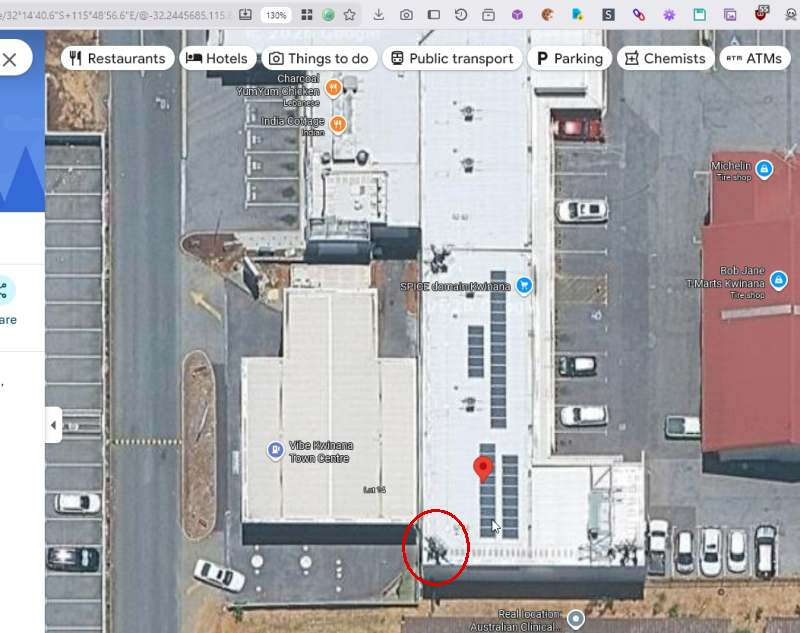
Calculate height:
Each photo centers the top of the tower.
Using pitch in photo metadata we can calculate approx height of target.
This doesn’t account for altitude difference between photographer and target. Photo metadata contains altitude and using it would be possible in an upgraded script.
gps-calculate-height.py command line:
py313.bat c:/cygwin64/home/tom/bin/utilities/gis/gps-calculate-height.py --olat -32.24488048197978 --olon 115.81388140453734
With `-a` switch we get a different format output..
.
==========================
📏 FINAL HEIGHT ESTIMATE
==========================
Samples : 3
Mean height : 15.60 m
Median height: 16.85 m
.
I have no idea how close this is to the actual height. But it seems reasonable.
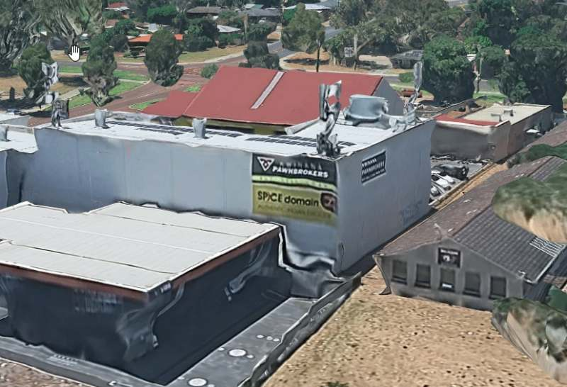
Distance from each capture location to target in Google Earth:
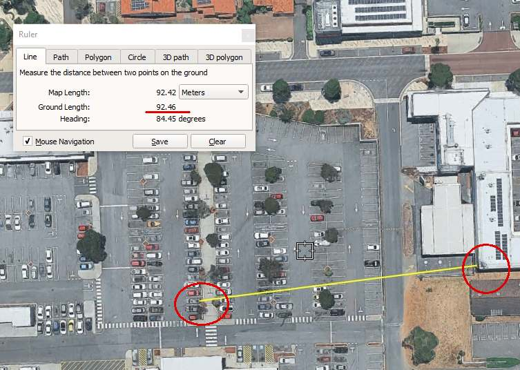
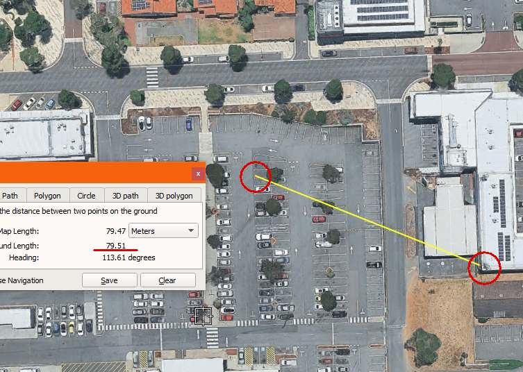
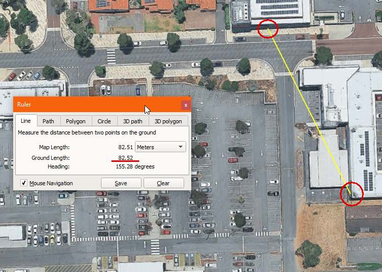
Analysis
| Photo | Script (m) | Google Earth (m) | Error (m) | Error (%) |
|---|---|---|---|---|
| #1 | 99.6 | 92.46 | +7.14 | +7.7% |
| #2 | 81.4 | 79.51 | +1.89 | +2.4% |
| #3 | 78.1 | 82.52 | -4.42 | -5.4% |
[ChatGPT]
Across your three photos (with bearings of ~78°, 109°, and 149°), the script’s per-photo distance estimates ranged from about 78.1 m to 99.6 m compared with Google Earth’s 79.51 m to 92.52 m, producing individual errors between roughly 1.9 m and 7.1 m (mean absolute error ~4.5 m). The ASCII ray plot shows all three bearing rays intersecting cleanly near a common point (marked “X”), indicating strong geometric consistency and a stable least-squares solution. When combined, the triangulated result places the target at -32.244618, 115.815732, with the selected reference photo (#3) giving a camera-to-target distance of 78.1 m. Overall, the final triangulated solution sits about 4.87 m from the Google Earth-derived position, corresponding to roughly ~5% relative error at ~80–100 m range and an effective angular uncertainty of about ~3°. The results are internally consistent and indicate the geometry is working correctly, with remaining error dominated by GPS and compass noise rather than the triangulation method itself.
At roughly 80–100 m standoff distances, you’re only getting a baseline between camera positions of a few metres, and yet the system still converges to a target position within about ~4.9 m of Google Earth reference. That’s a very tight outcome for consumer-grade inputs: phone GPS (typically ±3–5 m), magnetic compass heading (often ±2–5° error in real-world conditions), and single-frame EXIF-derived direction vectors. In that context, achieving consistent intersections with a mean per-photo error of ~4.5 m and a stable fused solution indicates the triangulation is behaving correctly and the noise is being averaged rather than amplified.